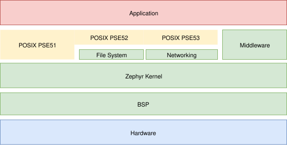
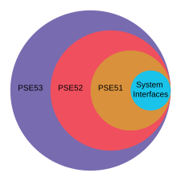

概述
可移植操作系统接口（Portable Operating System Interface，POSIX）是由 IEEE Computer Society 制定的一系列标准，用于保持操作系统之间的兼容性。Zephyr 实现了 IEEE 1003.1-2017 （又称 POSIX-1.2017）所规定的标准 POSIX API 的一个子集。

备注
本页不介绍 Zephyr 的 POSIX 架构，该架构用于将 Zephyr 作为主机操作系统下的原生应用程序运行，以便进行原型开发、测试和诊断。
借助 Zephyr 提供的 POSIX 支持，可以将现有的符合 POSIX 的应用程序移植到 Zephyr 内核上运行，从而利用 Zephyr 的特性和功能。此外，按符合 POSIX 设计的库无需修改即可移植到基于 Zephyr 内核的应用程序中。
POSIX API 作为物联网和嵌入式应用程序的 OSAL（操作系统抽象层）越来越流行，Zephyr、AWS:FreeRTOS、TI-RTOS 和 NuttX 都是例证。
Zephyr 中 POSIX 支持的好处包括：
为非嵌入式程序员（尤其是来自 Linux 的程序员）提供熟悉的 API
使基于 POSIX API 的现有库可以复用（可移植）
提供一个适合小型（MCU）嵌入式系统的高效 API 子集
POSIX 子配置文件（Subprofile）
尽管 Zephyr 支持运行多个 线程 （可能处于 SMP 配置下），也支持 虚拟内存和 MMU，但 Zephyr 的代码和数据通常共享一个公共地址空间，该地址空间被划分为若干独立的 内存域。Zephyr 内核的可执行代码和应用程序的可执行代码通常被编译进同一个二进制产物。从这个角度看，可以认为 Zephyr 应用程序运行在单个进程的上下文中。
通用操作系统（OS）提供完整的 POSIX 一致性，而 Zephyr 这样的实时操作系统（RTOS）通常用于固定用途，硬件资源有限，用户交互也很少。在这类系统中，完整的 POSIX 一致性可能不切实际，也没有必要。
因此，POSIX 在 IEEE 1003.13-2003 （又称 POSIX.13-2003）中定义了以下 应用程序环境配置文件（AEP）。每个 AEP 都在必需的 POSIX 系统接口 之上逐步增加更多功能。


POSIX.13-2003 AEP 于 2003 年通过“功能单元”（Units of Functionality）正式确立，但该规范现已不再活跃（仅供参考）。尽管如此，其意图仍通过 选项 和 选项组 保留在 POSIX-1.2017 中。
更多信息请参阅 IEEE 1003.1-2017, Section E, Subprofiling Considerations。
Zephyr 中的 POSIX 应用程序
Zephyr 中的 POSIX 应用程序与 其他任何应用程序的构建方式相同，因此同样需要 prj.conf、CMakeLists.txt 和源代码。例如，下面的应用程序使用了 POSIX 函数 nanosleep() 和 perror()。
#include <stddef.h>
#include <stdio.h>
#include <time.h>
void megasleep(size_t megaseconds)
{
struct timespec ts = {
.tv_sec = megaseconds * 1000000,
.tv_nsec = 0,
};
printf("See you in a while!\n");
if (nanosleep(&ts, NULL) == -1) {
perror("nanosleep");
}
}
int main()
{
megasleep(42);
return 0;
}
更多 POSIX 应用程序示例，请参阅 POSIX sample applications。
配置
与 Zephyr 中的大多数功能一样，POSIX 功能 高度可配置，但默认是禁用的。用户必须通过 Kconfig 选择显式启用 POSIX 选项。
子配置文件
启用下列 Kconfig 选项之一，即可快速配置一个预定义的 POSIX 子配置文件。
可以根据需要通过 Kconfig 启用其他 POSIX 选项和选项组 （例如 CONFIG_POSIX_C_LIB_EXT=y）。还可以通过 其他与 POSIX 相关的 Kconfig 选项 进一步微调。
今后，应将子配置文件、选项和选项组视为在 Zephyr 中配置 POSIX 的首选方式。
旧版方式
过去，Zephyr 使用 CONFIG_POSIX_API 配置一组 POSIX 功能，这组功能承载过多，而且规模不断增大。
该选项现已冻结，可视为等同于以下选项：
不过，CONFIG_POSIX_API 应被视为旧版选项，新的 Zephyr 应用程序不应使用它。